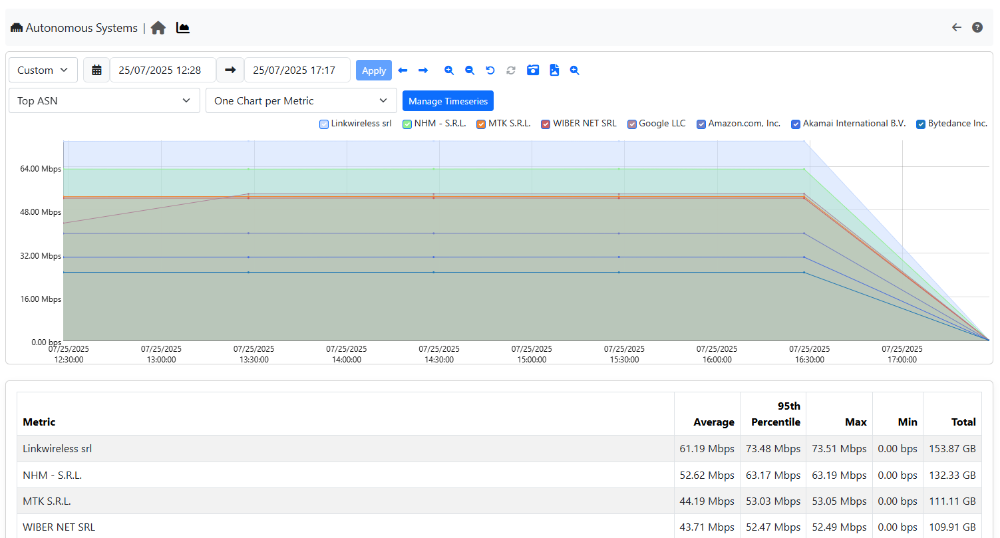
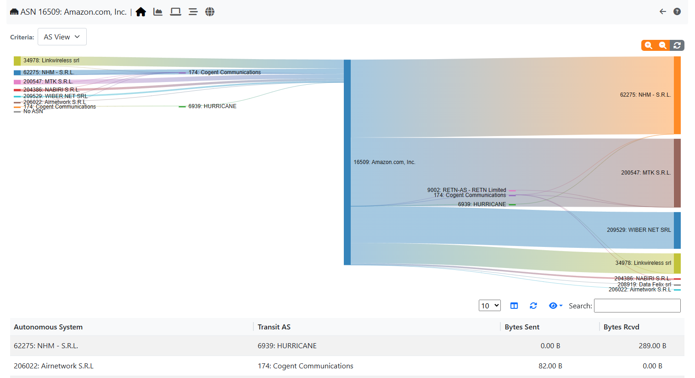

Autonomous Systems
Autonomous Systems shows all autonomous systems discovered by ntopng. Autonomous Systems require Geolocation enabled.

The Hosts Autonomous Systems Summary Page
Ntopng uses a Maxmind database to gather information about Autonomous Systems (AS) and based on this it groups hosts belonging to the same AS. AS number 0 contains all hosts having private IP addresses.
It is possible to tell ntopng which ASNs are your own, which ones belong to your customers, and which ones are simply relevant for your business: see ASN Configuration for the configuration details.
The page has two tabs: Overview, with the chart of the top Autonomous Systems and the table, and Historical Data, with the Autonomous System timeseries of the interface. Historical Data is greyed out until Autonomous System timeseries are enabled in Settings > Preferences > Timeseries.
The filters above the chart apply to both the chart and the table:
ASN Filter: all the ASNs, or only your ASNs, your customers ASNs, the relevant remote ASNs or the other ones (see ASN Configuration)
Time: Live or a past time range (last 30 minutes up to last week). Only shown when ClickHouse is enabled
Interface Role: the traffic seen on IX, peering or transit SNMP interfaces. Needs Enterprise M
Clear filters sets all of them back to their default.
The chart (when the timeseries are enabled, Enterprise license) shows the top active Autonomous Systems over time.
When the Live time is selected (or when ClickHouse is not available), the table below the chart is labeled Active ASN Since Startup: it reports the traffic of each Autonomous System cumulated since ntopng startup, and it is independent from the time range selected for the chart. Hovering the label shows a tooltip with this explanation.
This happens because the Autonomous Systems historical table is built from the data stored in ClickHouse, while the Timeseries do not require ClickHouse. As a consequence, without ClickHouse the chart can be moved to any time range, but the table always shows the data collected since ntopng startup.
Note
When ClickHouse is enabled, select a Time value other than Live to show the historical table for the selected period.
The name of each Autonomous System links to its RIPEstat and PeeringDB pages (in a new browser tab). The icons next to the name mark your ASNs, your customers ASNs and the relevant remote ASNs.
The button of the Actions column opens the hosts of the Autonomous System. Its menu also has:
Flows of this AS: the live flows, or the historical flows of the selected time range when Time is not Live
Timeseries
Ingress/Egress Stats: only with flows from an nProbe exporter, not for the private hosts (ASN 0)
Unavailable actions are shown greyed out with the reason (for example, a past time range can show an Autonomous System that has no active hosts now: its hosts and ingress/egress statistics are not available).
Timeseries

The Top ASN Timeseries
Warning
To be able to see the Timeseries, they must be enabled from the Settings (Timeseries section).
It is possible to access the Autonomous Systems Timeseries in two different ways:
By clicking on the Action (button) -> Timeseries, in this way the timeseries of the selected AS are shown;
By clicking on the Historical Data tab, in this way all the AS timeseries of the selected Interface are shown;
Warning
In case many Autonomous Systems are present, the loading of all the Timeseries (second option above) could may take a while
Ingress/Egress Stats
This page is used to understand, each AS, where it is sending/receiving the traffic.

The Autonomous Systems View
There are two different Criteria:
AS View;
Ingress/Egress Interfaces;
In the first case the statistics of each AS that are talking to other ASes are shown. Also the Transit AS are shown here (for example ASN 174 is talking to ASN 16509 by using ASN 6939 as Transit). The table shows the same data as the sankey but in a table view (sortable and searchable).
Note
The table below is available only from Enterprise L license

The Autonomous Systems View
In the second view instead, it’s shown from which exporter and interface each AS is sending/receiving traffic.
Note
The second view is only available if there is at least an exporter sending traffic towards ntopng (see Using ntopng with nProbe)
Hosts/Flows
All the hosts or flows being part of the selected Autonomous System, are shown on the respective Hosts and Flows pages